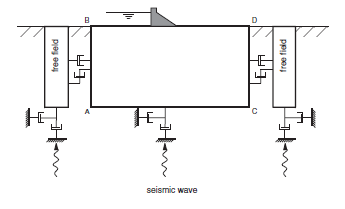
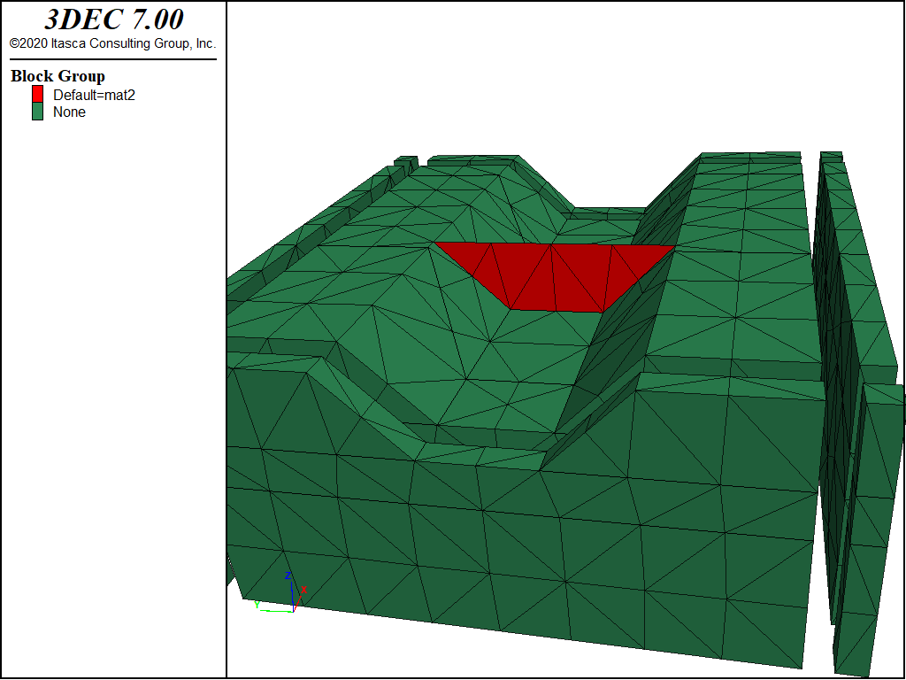
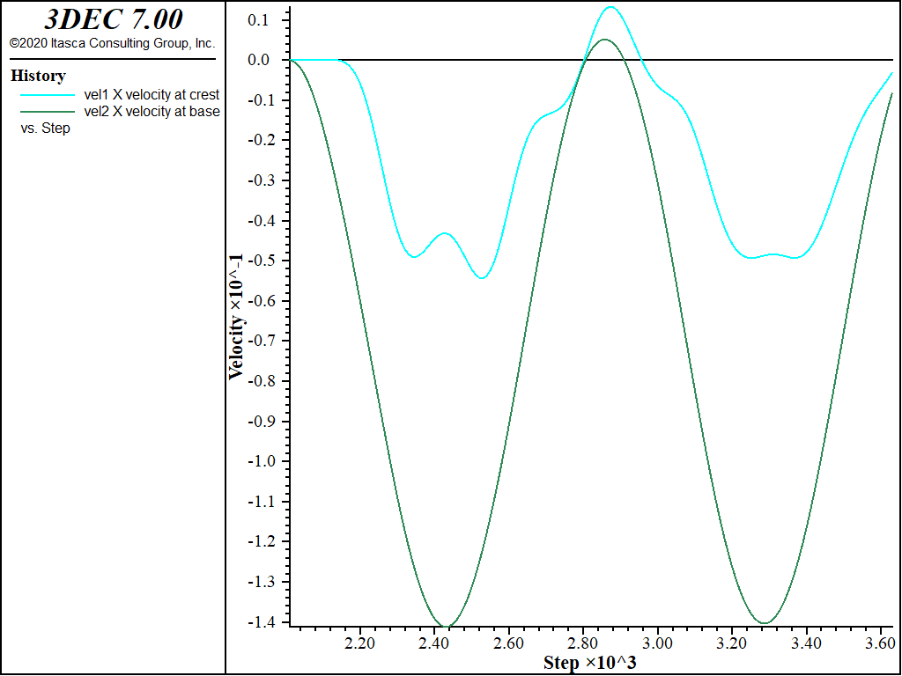
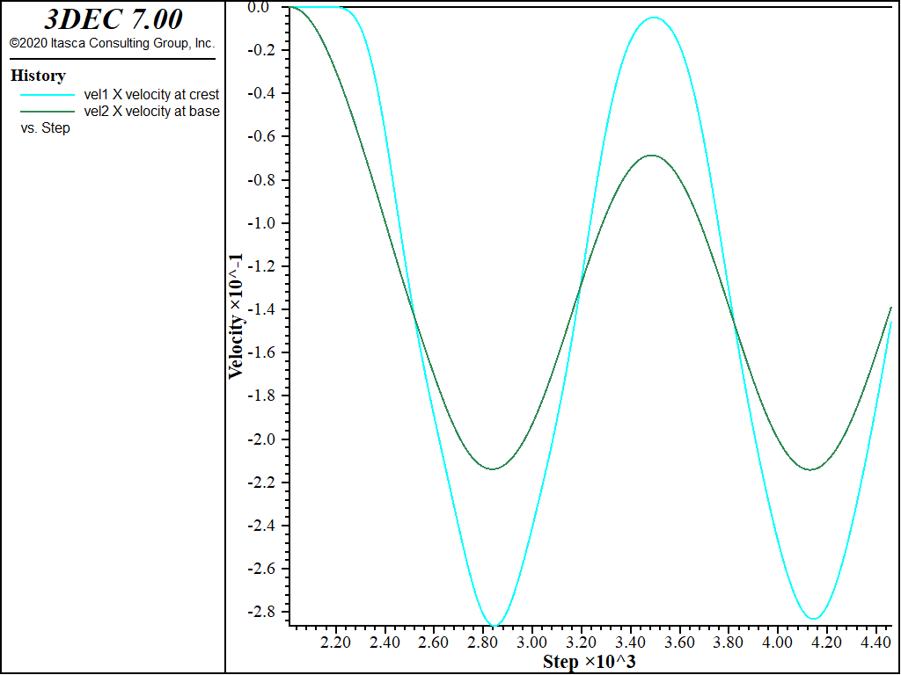

边界条件
非反射边界
岩土力学问题的建模涉及这样的介质：在分析尺度上，将其表示为无界介质更为合适。深部地下开挖通常假定被无限介质包围，而地表和近地表结构则假定位于半空间之上。依赖于有限空间区域离散化的数值方法，要求在人为的数值边界上施加适当条件。在静力分析中，固定边界或弹性边界（例如由边界元方法表示的边界）可以实际地设置在距所关注区域一定距离处。但在动力问题中，此类边界条件会使向外传播的波反射回模型，无法实现必要的能量辐射。采用更大的模型可减轻这一问题，因为材料阻尼会吸收从远处边界反射回来的波的大部分能量。然而，这种方案的计算成本很高。替代方案是采用非反射（或吸收）边界。目前已提出多种格式。3DEC 中采用的是 Lysmer 和 Kuhlemeyer（1969）提出的黏性边界。它基于独立阻尼器的使用，对于以大于 30° 的入射角接近边界的体波几乎完全有效。对于较小的入射角或面波，能量吸收只是近似的。但其优点在于它是一种可用于时域分析的有效技术。其有效性已在有限元模型和有限差分模型中得到验证（Kunar 等，1977）。White 等人（1977）提出的该技术的一种变体也被广泛使用。
更高效的能量吸收（例如在瑞利波情况下）需要使用频率相关的阻尼器，而这类阻尼器只能用于频域分析（如 Lysmer 和 Waas，1972）。这类边界通常称为一致边界，其计算涉及耦合所有边界自由度的动力刚度矩阵。可采用边界元方法推导这些矩阵（如 Wolf，1985）。Roesset 和 Ettouney（1977）报告了不同简单边界、黏性边界和一致边界性能的对比研究。
Cundall 等人（1978）提出了一种用于时域研究的、可获得高效吸收边界的另一种方法。该方法基于将应力边界解与速度边界解叠加，从而使反射相互抵消。在实际操作中，它需要在紧邻边界的狭窄区域内对两个平行重叠网格的结果求和。该方法已被证明能有效吸收能量，但对于几何形状复杂的块体系统难以实现，因此未在 3DEC 中使用。
Lysmer 和 Kuhlemeyer（1969）提出的黏性边界由沿法向和剪切方向附着于边界的独立阻尼器组成。它们提供的黏性法向面力和剪切面力由下式给出
其中：
\(v_n\) 和 \(v_s\) 分别是边界上速度的法向分量和剪切分量；
\(\rho\) 为质量密度；以及
\(C_p\) 和 \(C_s\) 分别为 \(p\) 波和 \(s\) 波的波速。
这些黏性项可直接引入位于边界上的网格点的运动方程中。不过，3DEC 中实现的是另一种方法，即像边界荷载那样，在每个时步计算并施加面力 \(t_n\) 和 \(t_s\)。这种替代方案使黏性边界也可用于刚性块体。试验表明，该实现的效果同样良好。唯一潜在的问题涉及数值稳定性，因为黏性力是由滞后半个时步的速度计算得到的。在迄今为止的实际分析中，尚未因使用非反射边界而需要减小时步。由高节理刚度或小尺寸网格单元所要求的时步限制通常更为重要。
动力分析从某种地应力状态开始。若采用速度来提供静力应力状态，则该边界条件可替换为非反射边界；在整个动力加载阶段都应保持边界反力。若静力地应力求解施加的是应力边界条件，那么在动力阶段施加非反射边界时，还必须在同一边界上施加符号相反的应力边界条件。这样可使动力计算时边界上具有正确的反力。
自由场边界
对土坝等地表结构的地震反应进行数值分析时，需要对基础附近的一定区域进行离散化。地震输入通常表示为向上穿过下卧材料传播的平面波。模型侧面的边界条件必须考虑在无结构情况下会存在的自由场运动。在某些情况下，简单的侧向边界可能就足够了。例如，若只在 图 1（Figure 1） 所示的水平边界 AC 上施加剪切波，则可以将沿 AB 和 CD 的边界仅约束竖直方向。这些边界应放置在足够远的位置，以尽量减小波的反射并实现自由场条件。对于材料阻尼较高的土体，这一条件可在相对较小的距离下满足（Seed 等，1975）。然而，当材料阻尼较低时，所需的距离可能导致模型不切实际。另一种方法是“强制”自由场运动，使边界保持其非反射特性（即来自结构的向外传播的波被适当吸收）。该方法曾用于连续介质有限差分程序 NESSI（Cundall 等，1980）。为 3DEC 开发了一种此类技术，即与主网格分析并行执行自由场计算。
主网格的侧向边界通过黏性阻尼器与自由场网格耦合，以模拟安静边界（见 图 1（Figure 1））；自由场网格的不平衡力施加于主网格边界。这两种条件由下面三个方程表示，这些方程适用于沿某侧边界面的自由场边界，其法线沿 \(x\) 轴方向。其他侧面和角点边界可写出类似的表达式：
其中
\(\rho\) = 沿竖直模型边界的材料密度；
\(C_p\) = 侧边界处的 \(p\) 波波速；
\(C_s\) = 侧边界处的 \(s\) 波波速；
\(A\) = 自由场网格点的影响面积；
\(v_x^m\) = 侧边界上主网格中网格点的 \(x\) 向速度；
\(v_y^m\) = 侧边界上主网格中网格点的 \(y\) 向速度；
\(v_z^m\) = 侧边界上主网格中网格点的 \(z\) 向速度；
\(v_x^{ff}\) = 侧面自由场中网格点的 \(x\) 向速度；
\(v_y^{ff}\) = 侧面自由场中网格点的 \(y\) 向速度；
\(v_z^{ff}\) = 侧面自由场中网格点的 \(z\) 向速度；
\(F_x^{ff}\) = 自由场网格点力，其值包含网格点周围自由场网格单元的 \(\sigma_{xx}^{\rm ff}\) 应力所作的贡献；
\(F_y^{ff}\) = 自由场网格点力，其值包含网格点周围自由场网格单元的 \(\sigma_{xy}^{\rm ff}\) 应力所作的贡献；以及
\(F_z^{ff}\) = 自由场网格点力，其值包含网格点周围自由场网格单元的 \(\sigma_{xz}^{\rm ff}\) 应力所作的贡献。
这样，向上传播的平面波在边界处不会发生畸变，因为自由场网格提供的条件与无限模型中的条件相同。若主网格是均匀的且没有地表结构，则侧向阻尼器不会起作用，因为自由场网格与主网格做相同的运动。然而，若主网格的运动与自由场不同（例如由于地表结构辐射二次波），则阻尼器会以类似于安静边界的方式吸收能量。

图 1：用于地表结构地震分析的模型及自由场网格。
为了在 3DEC 中施加自由场边界，模型必须满足：底面水平且其法线沿 \(y\) 轴方向，侧面竖直且其法线沿 \(x\) 轴或 \(z\) 轴方向。若入射地震波的传播方向不是竖直的，则可旋转坐标轴，使 \(y\) 轴与传播方向重合。在这种情况下，重力将与 \(y\) 轴成一定角度作用，水平的自由面也将相对于模型边界倾斜。
自由场模型由模型侧边界上的四个平面自由场网格和角点处的四个柱状自由场网格组成。平面网格的生成与侧边界上的主网格单元相匹配，从而使自由场中的网格点与主网格中的网格点一一对应。四个角点自由场柱体充当平面自由场网格的自由场边界。平面自由场网格是二维计算，假定在垂直于平面的方向上无限延伸；柱状自由场网格是一维计算，假定在两个水平方向上均无限延伸。平面网格和柱状网格均由标准 3DEC 网格单元组成，其网格点以某种方式受到约束，以满足无限延伸的假定。
在施加自由场边界之前，模型应处于静力平衡状态。当调用 block dynamic free-field apply 命令时，动力分析之前的静力平衡条件会自动传递到自由场。自由场条件施加于侧向边界网格点。与自由场相邻的模型网格单元中的所有单元数据（包括模型类型和当前状态变量）都会复制到自由场区域。自由场应力取相邻网格单元的平均应力。模型底部的动力边界条件应在施加自由场之前指定。施加自由场时，这些底部条件会自动传递到自由场。注意，自由场是连续的；若主网格中含有延伸至模型边界的接触面，则该接触面将不会延续到自由场中。
发出 block dynamic free-field apply 命令后，只要绘制块体，就会自动绘制自由场网格。可使用 block dynamic free-field list 命令打印自由场信息。
使用动力自由场的示例
建立一个混凝土重力坝的简单模型。模型的顶部边界为自由边界。模型的底部为黏性（安静）边界。图 2（Figure 2） 给出了模型几何形状，大坝位于顶部中央。模型首先在重力作用下运行至静力平衡，以使体力与边界力平衡。这必须在施加自由场边界之前完成。


图 2：可见自由场块体的大坝模型。
下一步是仅使用黏性边界运行该模型。在模型底部施加脉冲剪应力函数。在该模型中，边界距离太近，从 图 3（Figure 3） 可以看出底部 \(x\) 向速度存在放大，坝顶处的运动发生畸变。


图 3：采用黏性边界时模型底部和坝顶的 \(x\) 向速度时程记录。
接下来，使用自由场重新运行该模型。自由场命令在模型边界处创建新的块体并自动对其划分网格。同样，在底部施加脉冲剪应力。动力输入由施加在模型底部的正弦剪应力波组成。图 4（Figure 4） 给出了底部和坝顶的 \(x\) 向速度时程记录。在这种情况下，底部的波没有放大，坝顶处的运动也没有畸变。


图 4：采用自由场边界时底部和坝顶的 \(x\) 向速度。
数据文件 - 自由场
model new
; -------------------------------------------------------------------
;
; 坝体动力自由场分析算例
; 底部施加脉冲应力波，顶部自由
;
; -------------------------------------------------------------------
;
model random 10000
model config dyn
model large-strain on
;
model title
Dynamic Analysis of a Dam
;
; ---- 几何形状 ----
block create brick -100 100 -100 100 -100 0
block cut joint-set dip 0 dip-direction 0 origin 0 0 -30
block hide range position-z -100 -30
block cut joint-set dip 45 dip-direction 0 origin 0 -50 0
block cut joint-set dip 45 dip-direction 180 origin 0 50 0
block hide range position-y -100 -50
block hide range position-y 50 100
block cut joint-set dip 90 dip-direction 90 origin -12 0 0
block delete range position-x -100 -12 position-z -30 0 position-y -50 50
block cut joint-set dip 51 dip-direction 90 origin -12 0 0
block delete range position-x 12 100 position-z -30 0 position-y -50 50
block group 'mat2'
block hide off
block hide range group 'mat2'
block join
block cut joint-set dip 30 dip-direction 270 ...
origin 30 0 -30 spacing 50 number 5
block hide off
block zone gen edgelength 26
; ---- 参数 ----
;
; E = 50000 MPa, v=0.25
; dens = 2500 kg/m3
; cp = 4899 m/s
; cs = 2828 m/s
;
block zone cmodel assign el
block zone prop dens 0.0025 bulk 33333 shear 20000
block zone prop bulk 20000 shear 12000 range group 'mat2'
block contact jmodel assign el
block contact prop stiffness-normal 10000 stiffness-shear 4000
block contact material-table default prop stiffness-normal 10000 ...
stiffness-shear 4000
; --- 边界条件和初始条件 ---
block gridpoint apply velocity-z 0 range position-z -100
block gridpoint apply velocity-x 0 range position-x -100
block gridpoint apply velocity-x 0 range position-x 100
block gridpoint apply velocity-y 0 range position-y -100
block gridpoint apply velocity-y 0 range position-y 100
block insitu stress 0 0 0 0 0 0 gradient-z 0.00125 0.00125 0.0025 0 0 0
model gravity 0 0 -10
block mechanical damp global
model cycle 2000
block mechanical damp rayleigh 0 0 mass
history delete
model dynamic time-total 0
block gridpoint initialize displacement 0 0 0
model history mechanical unbalanced-maximum
block hist name 'vel1' vel-x pos 0 0 0
block hist name 'vel2' vel-x pos 0 0 -100
block hist name 'vel3' vel-x pos -40 -20 -28
hist name 'vel1' label 'X velocity at crest'
hist name 'vel2' label 'X velocity at base'
; 将在底部施加的脉冲波
[freq = 15]
fish def impulse
impulse = 0.5*(1.0-math.cos(2.0*freq*dynamic.time.total))
end
fish history impulse
model save "ff1"
model res "ff1"
; 仅采用黏性边界
;
block gridpoint apply visc-x range pos-x -100
block gridpoint apply visc-x range pos-x 100
block gridpoint apply visc-y range pos-y -100
block gridpoint apply visc-y range pos-y 100
block face apply stress-xz 2.0 fish impulse range pos-z -100
block gridpoint apply visc range pos-z -100
model solve time-total 0.4
model save "ff2"
model rest "ff1"
; 采用自由场边界运行
;
; --- 创建自由场 ---
;
block dynamic free-field apply gap 10 thick 10
block face apply stress-xz 2.0 fish impulse range pos-z -100
block gridpoint apply visc range pos-z -100
model solve time-total 0.4
model save "ff3"
block dynamic free-field list
| 这些内容对您有帮助吗？… 版权与免责声明 |
FLAC3D © 2019, Itasca | 原文更新于 2020 年 10 月 8 日 |